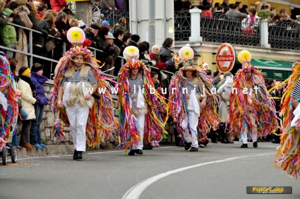

Povodom 80. godina postojanja, 2003. godine Pusni odbor Toronjera dobio je općinsko priznanje za svoj opstanak i aktivnost. Sve je krenulo od ’60-tih godina kada su Matuljci počeli dolaziti u Lovran. Od tih najranijih početaka pa sve do danas su i Žejanski zvončari…
Lovran – Lovran i maškare povezani su dugom tradicijom. Jednostavno rečeno, Lovran je gradić koji živi za maškare. Zašto je to baš tako upitali smo dugogodišnjeg člana Pusnog društva ”Toronjera”, Radovana Trinajstića: ”Pusno društvo ”Toronjera” registrirano je od 1923. godine te su već tada imali svoj statut. Sve je počelo u oštariji Liburnija, obitelji Gašparinić, koja se nalazila u lovranskoj staroj jezgri.
To je bilo doba Italije, pa je upravo i himna Toronjere na talijanskom jeziku. Sve je krenulo od muškog razgovora u toj istoj oštariji koji su došli na ideju da napišu pjesmu. Glazba za pjesmu ”Toronjera” preuzeta je od neke talijanske pjesme, a sviralo se na harmonici. Nakon toga su njih tridesetak oformili i pusno društvo jer maškare su bile važne za Lovran kao i danas. Maškare nakon Drugog svjetskog rata nisu bile poželjne jer su se nadređeni bojali da ih ne bi ismijali te su oni koji su držali do ovoga običaja bili zatvarani. Sve do ’70.-tih godina prošlog stoljeća ”Toronjera” nije bila aktivna. Na inicijativu Antona Tončića Šorića, Pusno društvo se ponovno aktiviralo. Tih godina su i žene bile dio društva dok su prije bili samo muškarci. Počele su se organizirati povorke, dječje redute i ostale manifestacije vezane uz ovo pusno vrijeme.
Lovranci su osim na svoje Pusno društvo ponosni i na dugogodišnju lovransku povorku koja se svake godine odvija na predzadnju nedjelju prije završetka pusnih zbivanja. ” Sve je krenulo od ’60- tih godina kada su Matuljci počeli dolaziti u Lovran. Od tih najranijih početaka pa sve do danas su i Žejanski zvončari. Negdje 80.-tih godina povorka je ojačala, a danas je doživjela svoj vrhunac.
Specifičnost naše povorke jest u tome što je spoj publike i maškara najbliži. Svake godine je sve veći i veći broj alegorijskih kola pa je mul postao pretijesan. Svaka prijavljena grupa dobije poklon od ”Toronjere”, a svi sudionici počašćeni su sa srdelicama i vinom, djeca s krafnama i sokom. Imamo i jako dobru podršku Turističke zajednice Lovran kao i općine Lovran.”
Kako su nekada izgledali pusni tanci ? ”U ’60.-tim i ’70. – tim godina znala su biti čak i dva plesa u jednom danu. Nekada su se plesovi održavali u svim lovranskim hotelima, čak i za vrijeme posljednjeg rata održavali su se u Društvenom domu. Danas se održavaju u restoranu ”Kvarner”, uz pomoć vlasnika Lovre Klarića. Na maškarane plesove dolazi profilirana publika koja se želi lijepo zabaviti i na miru zaplesati. Dolaze iz cijelog riječkog i opatijskog kraja. Kako svake godine manje-više isti gosti dolaze već smo poput obitelji. Naravno, tu su i članovi ”Toronjere” koji animiraju publiku, dijele nagrade, zabavljaju i tako…” – rekao nam je Trinajstić.
Ako ste mislili da je to sve što ovo pusno društvo priređuje gadno ste se prevarili jer tu je za njih i nezaobilazna Pusna nedeja – dan kada se pobiraju jaja. ”Već smo ustalili svoju trasu od restorana Riviera Lovran preko Školareva pa sve do Oprića . Negdje oko četrdesetak domaćinstva obiđemo, a tradicija nalaže da se s domaćicom zapleše. Domaćini nas počaste te nam daju pancetu, jaja, vino, kobasice i tako. Ima jedno nepisano pravilo, pa se tako svake godine tri skupine pobirača jaja, Toronjera, Dobreć i Ika skupe kod Zvonka Piglića na fažol, a bude oko stotinjak maškara.” Kada završe sva pusna događanja preostaje samo Jajarska večera gdje se oni međusobno zabave i prepričavaju dogodovštine koje su ih snašle.
Postojao je jedan brižni čovečić, Lovranac, po imenu Toronić koji je svoje zadovoljstvo vidio u maškarama i bio je siromašan. Obukao bi frak i cilindar, u ruci bi nosio ”šćapić”. Upravo su cilindar i šćapić službeni znak Toronjere.
Nekada je postojala i uniforma kako su se članovi Toronjere za vrijeme pusta oblačili. Na glavi cilindar, crni frak s brillom (poklopac od patine marke Brill), u ruci bagulin (šćapić koji na vrhu ima bočicu). I tako i dan – danas Toronić živi među nama upravo kroz Pusno društvo ”Toronjera”.

Serena Calderara
Foto: David Kurti
February 2, 2011
© 2011 Liburnija